Edit image 1 into the next animation frame. Image 2 is only a skeleton and outline layout specifying the absolute target pose. Repose the existing subject to match it, replacing the previous limb positions rather than adding limbs. Keep the same head facing direction. Do not copy any lines, joints, white guide background or mannequin into the output. Spread BOTH existing arms sideways at shoulder height, matching the skeleton. Keep the torso and head in their original orientation. Preserve the same face and head direction, hairstyle, white lace sleeves and gown, waist belt, room, window, curtains, lace-covered table, ornaments, lighting and camera. Change only the two existing arms, natural sleeve folds, shadows and newly revealed background. Keep the torso and lower body still. Do not add arms, hands, skeleton lines, panels or motion trails.
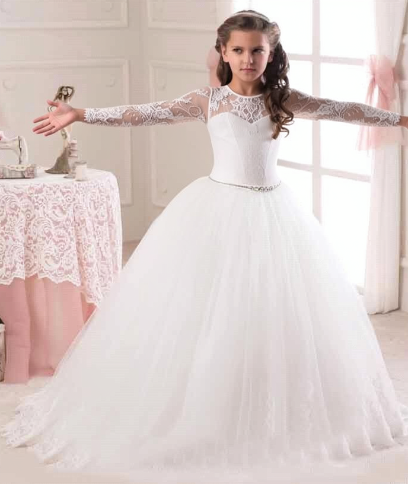
Edit image 1 into the next animation frame. Image 2 is only a skeleton and outline layout specifying the absolute target pose. Repose the existing subject to match it, replacing the previous limb positions rather than adding limbs. Keep the same head facing direction. Do not copy any lines, joints, white guide background or mannequin into the output. Lift BOTH arms diagonally upward into a clear V beside the head, with both hands well above the shoulders. Match the guide without lengthening the arms. Preserve the same face and head direction, hairstyle, white lace sleeves and gown, waist belt, room, window, curtains, lace-covered table, ornaments, lighting and camera. Change only the two existing arms, natural sleeve folds, shadows and newly revealed background. Keep the torso and lower body still. Do not add arms, hands, skeleton lines, panels or motion trails.
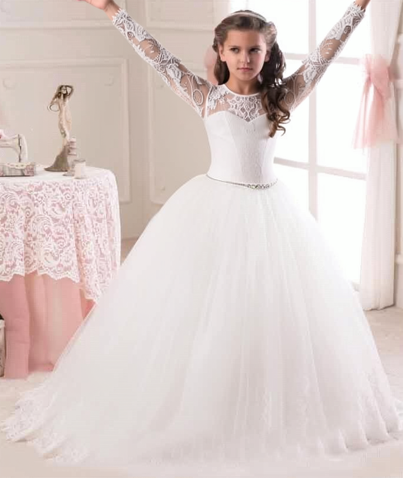
Edit image 1 into the next animation frame. Image 2 is only a skeleton and outline layout specifying the absolute target pose. Repose the existing subject to match it, replacing the previous limb positions rather than adding limbs. Keep the same head facing direction. Do not copy any lines, joints, white guide background or mannequin into the output. Lower BOTH arms naturally beside the white skirt, matching the lowered hands in the guide. Preserve the same face and head direction, hairstyle, white lace sleeves and gown, waist belt, room, window, curtains, lace-covered table, ornaments, lighting and camera. Change only the two existing arms, natural sleeve folds, shadows and newly revealed background. Keep the torso and lower body still. Do not add arms, hands, skeleton lines, panels or motion trails.
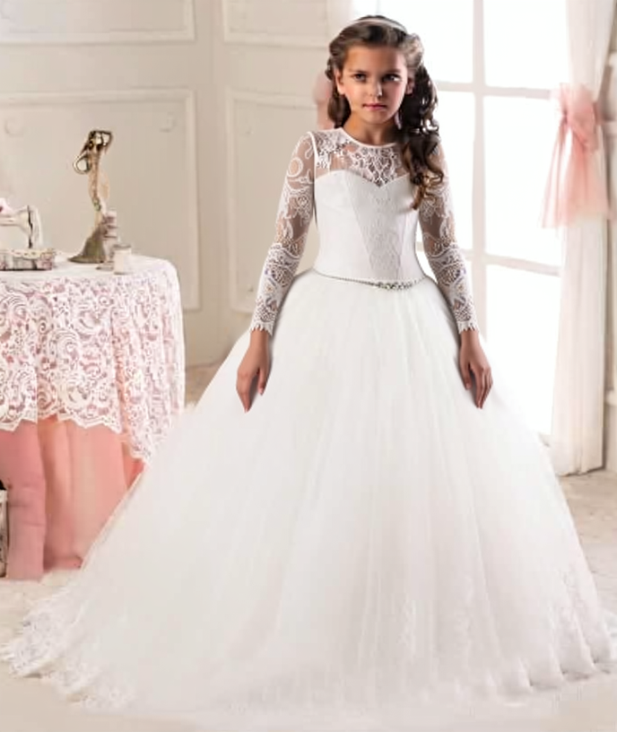
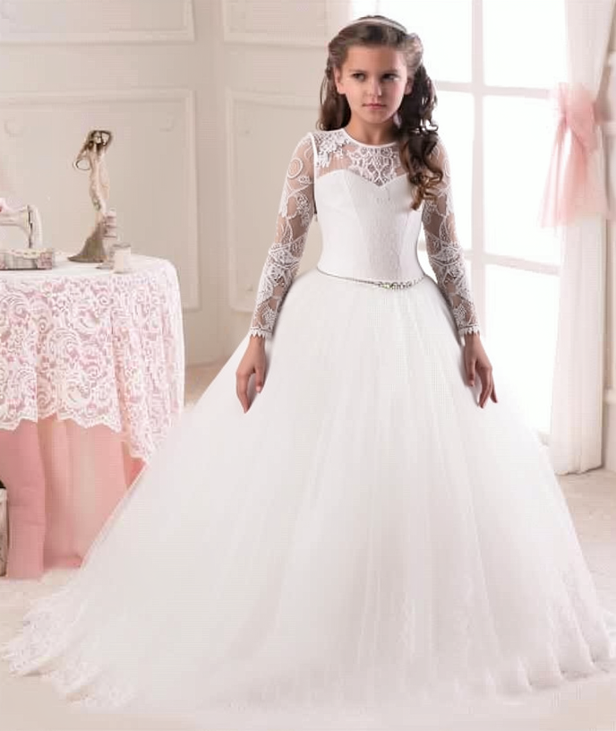
Edit image 1 into the next animation frame. Image 2 is only a skeleton and outline layout specifying the absolute target pose. Repose the existing subject to match it, replacing the previous limb positions rather than adding limbs. Keep the same head facing direction. Do not copy any lines, joints, white guide background or mannequin into the output. Raise only the arm on the LEFT side of the image diagonally upward beside the head; keep the other arm lowered. Preserve the same face and head direction, hairstyle, white lace sleeves and gown, waist belt, room, window, curtains, lace-covered table, ornaments, lighting and camera. Change only the two existing arms, natural sleeve folds, shadows and newly revealed background. Keep the torso and lower body still. Do not add arms, hands, skeleton lines, panels or motion trails.
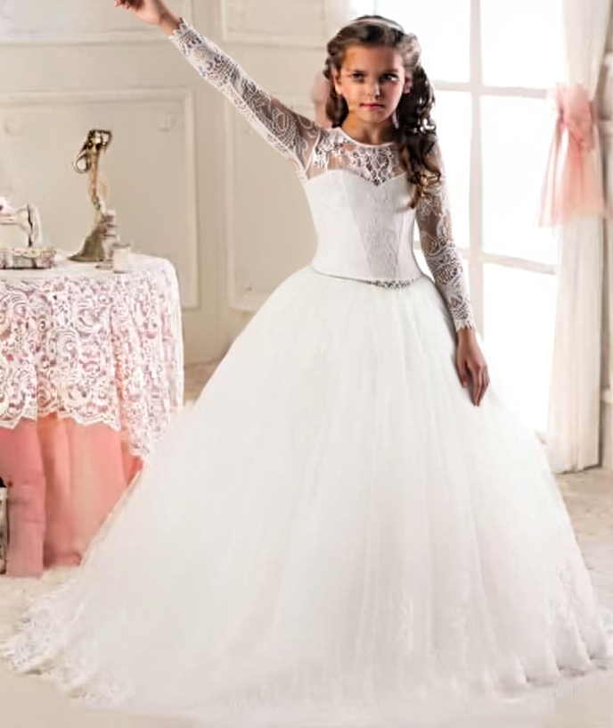
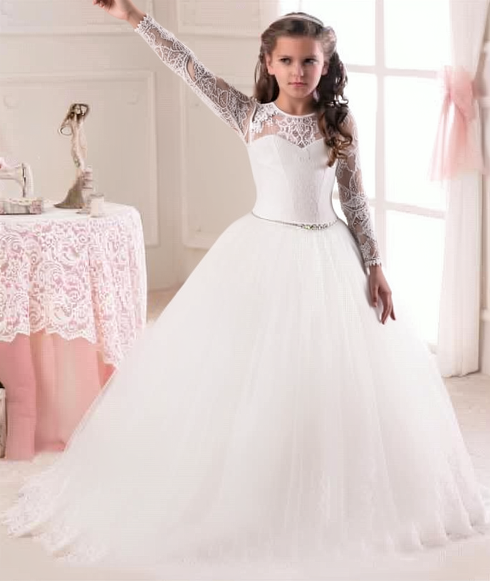
Edit image 1 into the next animation frame. Image 2 is only a skeleton and outline layout specifying the absolute target pose. Repose the existing subject to match it, replacing the previous limb positions rather than adding limbs. Keep the same head facing direction. Do not copy any lines, joints, white guide background or mannequin into the output. Exchange sides: lower that arm and raise only the arm on the RIGHT side of the image diagonally upward beside the head. Preserve the same face and head direction, hairstyle, white lace sleeves and gown, waist belt, room, window, curtains, lace-covered table, ornaments, lighting and camera. Change only the two existing arms, natural sleeve folds, shadows and newly revealed background. Keep the torso and lower body still. Do not add arms, hands, skeleton lines, panels or motion trails.
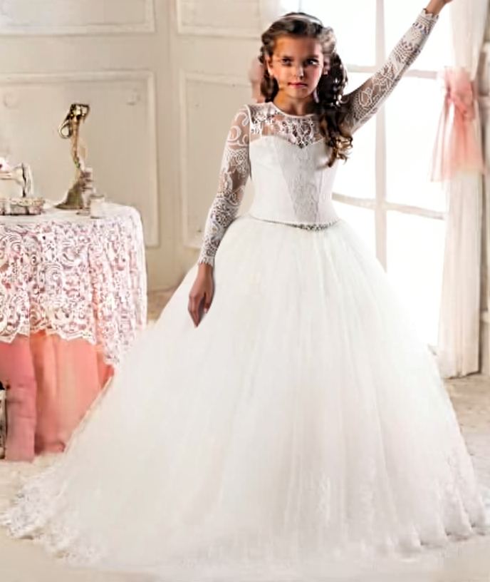
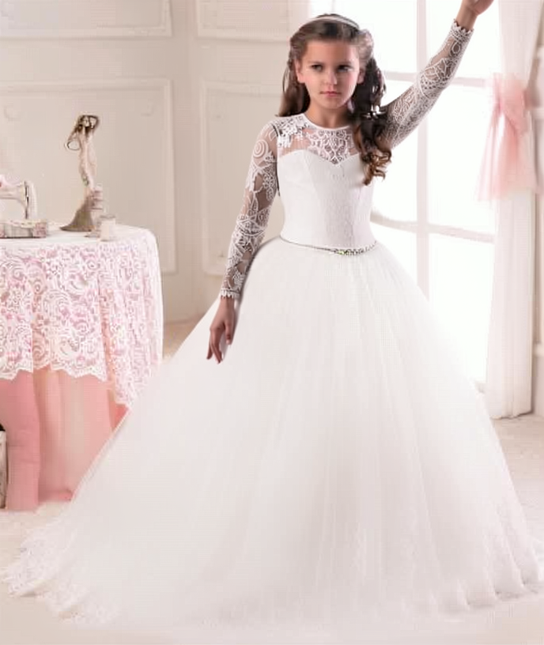
Edit image 1 into the next animation frame. Image 2 is only a skeleton and outline layout specifying the absolute target pose. Repose the existing subject to match it, replacing the previous limb positions rather than adding limbs. Keep the same head facing direction. Do not copy any lines, joints, white guide background or mannequin into the output. Bring BOTH arms into a broad sideways spread at shoulder height, matching the guide. Preserve the same face and head direction, hairstyle, white lace sleeves and gown, waist belt, room, window, curtains, lace-covered table, ornaments, lighting and camera. Change only the two existing arms, natural sleeve folds, shadows and newly revealed background. Keep the torso and lower body still. Do not add arms, hands, skeleton lines, panels or motion trails.
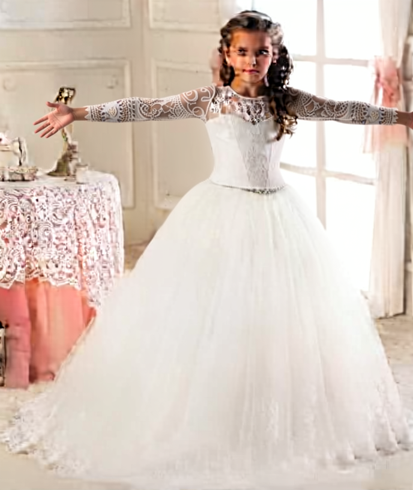
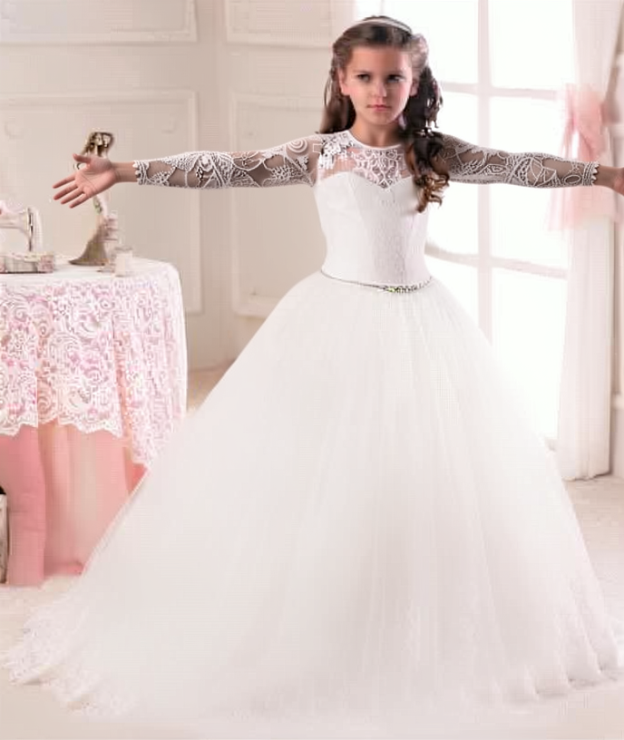
Edit image 1 into the next animation frame. Image 2 is only a skeleton and outline layout specifying the absolute target pose. Repose the existing subject to match it, replacing the previous limb positions rather than adding limbs. Keep the same head facing direction. Do not copy any lines, joints, white guide background or mannequin into the output. Lift BOTH arms diagonally upward into the same V pose beside the head. Preserve the same face and head direction, hairstyle, white lace sleeves and gown, waist belt, room, window, curtains, lace-covered table, ornaments, lighting and camera. Change only the two existing arms, natural sleeve folds, shadows and newly revealed background. Keep the torso and lower body still. Do not add arms, hands, skeleton lines, panels or motion trails.
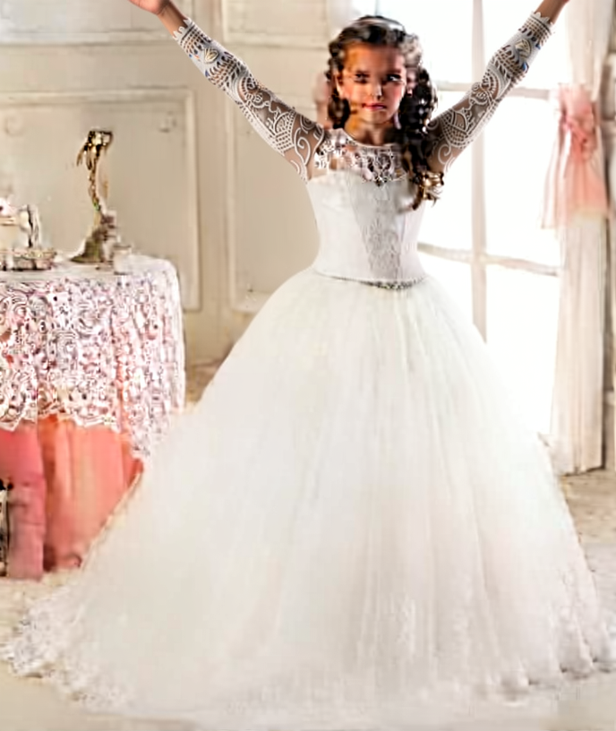
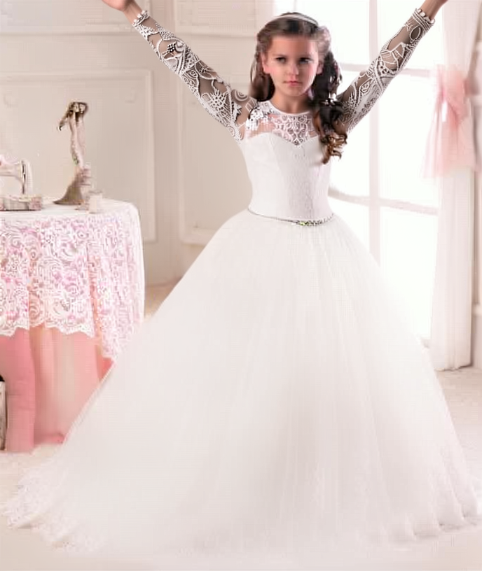
Edit image 1 into the next animation frame. Image 2 is only a skeleton and outline layout specifying the absolute target pose. Repose the existing subject to match it, replacing the previous limb positions rather than adding limbs. Keep the same head facing direction. Do not copy any lines, joints, white guide background or mannequin into the output. Lower both arms outward into a horizontal spread at shoulder height. Preserve the same face and head direction, hairstyle, white lace sleeves and gown, waist belt, room, window, curtains, lace-covered table, ornaments, lighting and camera. Change only the two existing arms, natural sleeve folds, shadows and newly revealed background. Keep the torso and lower body still. Do not add arms, hands, skeleton lines, panels or motion trails.
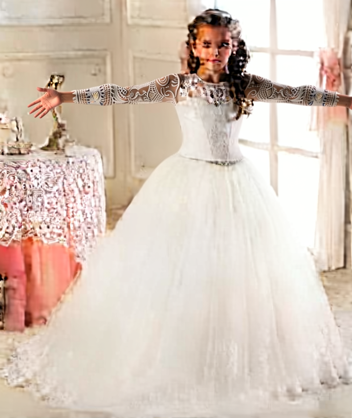
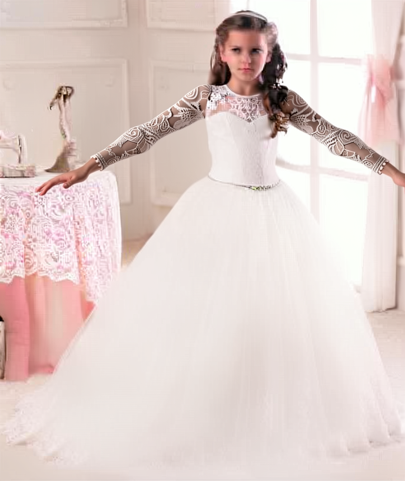
Edit image 1 into the next animation frame. Image 2 is only a skeleton and outline layout specifying the absolute target pose. Repose the existing subject to match it, replacing the previous limb positions rather than adding limbs. Keep the same head facing direction. Do not copy any lines, joints, white guide background or mannequin into the output. Raise BOTH arms diagonally upward once more, matching the earlier V pose without increasing the reach. Preserve the same face and head direction, hairstyle, white lace sleeves and gown, waist belt, room, window, curtains, lace-covered table, ornaments, lighting and camera. Change only the two existing arms, natural sleeve folds, shadows and newly revealed background. Keep the torso and lower body still. Do not add arms, hands, skeleton lines, panels or motion trails.
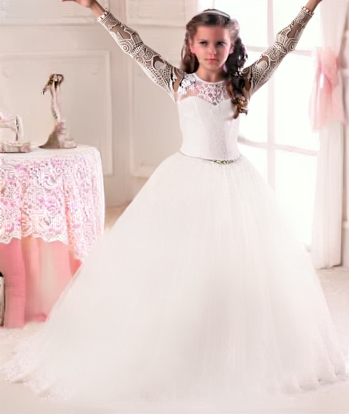
Edit image 1 into the next animation frame. Image 2 is only a skeleton and outline layout specifying the absolute target pose. Repose the existing subject to match it, replacing the previous limb positions rather than adding limbs. Keep the same head facing direction. Do not copy any lines, joints, white guide background or mannequin into the output. Finish with BOTH arms lowered naturally beside the white skirt. Keep the torso and lower body still. Preserve the same face and head direction, hairstyle, white lace sleeves and gown, waist belt, room, window, curtains, lace-covered table, ornaments, lighting and camera. Change only the two existing arms, natural sleeve folds, shadows and newly revealed background. Keep the torso and lower body still. Do not add arms, hands, skeleton lines, panels or motion trails.
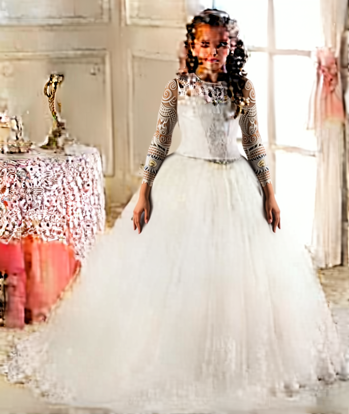
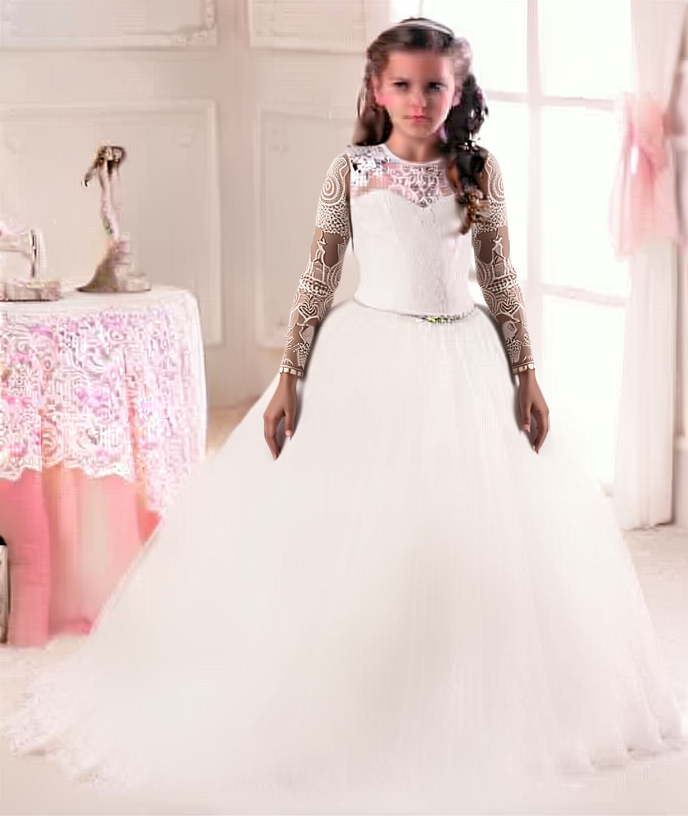